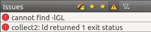

Linux Qt cannot find -lGL错误完美解决方案（亲测有效）
对于很多 Linux 发行版本，Qt 安装完成后如果直接编译或者运行项目，会出现“cannot find -lGL”错误，如下图所示：
这是因为 Qt 找不到 OpenGL 的动态链接库（libGL.so）。在《Linux Qt安装》一节中我们说过，OpenGL 在大部分 Linux 发行版中都是默认安装的，包括 Ubuntu、CentOS 等，找不到该链接库一般都是路径不对。
Qt 默认在 /usr/lib/ 目录下查找动态链接库，但是很多 Linux 发行版将 OpenGL 链接库放在其它目录，例如我使用的是 CentOS 7，OpenGL 链接库位于 /usr/lib64/ 目录，而对于 Ubuntu，OpenGL 链接库位于 /usr/lib/i386-linux-gnu/mesa/ 目录。只要我们把 libGL.so 拷贝到 /usr/lib/ 目录，或者在 /usr/lib/ 目录下为 libGL.so 创建一个链接，就能解决问题。显然第二种办法更好。
另外，Linux 发行版自带的 OpenGL 链接库在后缀中添加了版本号，例如 libGL.so.1、libGL.so.1.2.0、libGL.so.1.3.1 等，但是 Qt 在链接阶段查找的 OpenGL 链接库是不带版本号的。
总起来说，我们需要在 /usr/lib/ 目录下为 OpenGL 链接库创建一个链接，并去掉版本号。
如果你不知道当前 Linux 系统中 libGL.so 的具体路径，可以使用
完成以上操作，再次启动 Qt，然后编译或者运行，就不会出现“cannot find -lGL”错误了。

这是因为 Qt 找不到 OpenGL 的动态链接库（libGL.so）。在《Linux Qt安装》一节中我们说过，OpenGL 在大部分 Linux 发行版中都是默认安装的，包括 Ubuntu、CentOS 等，找不到该链接库一般都是路径不对。
Qt 默认在 /usr/lib/ 目录下查找动态链接库，但是很多 Linux 发行版将 OpenGL 链接库放在其它目录，例如我使用的是 CentOS 7，OpenGL 链接库位于 /usr/lib64/ 目录，而对于 Ubuntu，OpenGL 链接库位于 /usr/lib/i386-linux-gnu/mesa/ 目录。只要我们把 libGL.so 拷贝到 /usr/lib/ 目录，或者在 /usr/lib/ 目录下为 libGL.so 创建一个链接，就能解决问题。显然第二种办法更好。
另外，Linux 发行版自带的 OpenGL 链接库在后缀中添加了版本号，例如 libGL.so.1、libGL.so.1.2.0、libGL.so.1.3.1 等，但是 Qt 在链接阶段查找的 OpenGL 链接库是不带版本号的。
总起来说，我们需要在 /usr/lib/ 目录下为 OpenGL 链接库创建一个链接，并去掉版本号。
如果你不知道当前 Linux 系统中 libGL.so 的具体路径，可以使用
locate libGL命令或find /usr -name libGL*命令查找，然后使用ln -s创建链接。请看下面的演示：
#查找 libGL 所在位置
[root@localhost ~]# locate libGL
/usr/lib64/libGL.so
/usr/lib64/libGL.so.1
/usr/lib64/libGL.so.1.2.0
/usr/share/doc/mesa-libGL-9.2.5
/usr/share/doc/mesa-libGL-9.2.5/COPYING
#创建链接
[root@localhost ~]# ln -s /usr/lib64/libGL.so.1 /usr/lib/libGL.so
完成以上操作，再次启动 Qt，然后编译或者运行，就不会出现“cannot find -lGL”错误了。
关注公众号「站长严长生」，在手机上阅读所有教程，随时随地都能学习。内含一款搜索神器，免费下载全网书籍和视频。

微信扫码关注公众号